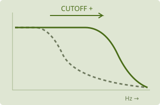
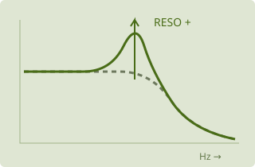

Por dentro do Usina · guia por módulo
English · Voltar ao manual · Instalação
Escolha uma parte do instrumento para explorar. Cada seção reúne onde fica, o que muda e um caminho para experimentar. Você pode acompanhar pelos desenhos, pelos valores ou pelo som, conforme sua preferência. Os exemplos são convites; não existe um resultado obrigatório.
ALFA: este guia descreve a interface em preparação. O plugin e a edição web/APK compartilham conceitos, mas podem ter recursos e apresentações diferentes. Novidades encontradas no código ainda precisam ser conferidas no release final.
Mapa das telas
| Quero… | No plugin | Na edição web/APK |
|---|---|---|
| Escolher um som | Biblioteca no topo | Seletor de timbre no topo; abre a biblioteca |
| Editar um operador | SYNTH → selecionar OP1–OP6 → OPERATOR | SYNTH → selecionar operador → OPERATOR; a visão geral pode estar recolhida |
| Trocar o tipo de síntese | Painel MODE do operador selecionado | MODE do operador selecionado |
| Editar o envelope do operador | OPERATOR → ENVELOPE | OPERATOR → envelope e gráfico editável |
| Filtrar a voz | SYNTH → FILTER / EG2 / OUTPUT | SYNTH → FILTER / EG2 / OUTPUT |
| Criar movimento | SYNTH → MOD → família da fonte | SYNTH → MOD → ENVELOPES, LFO, FUNCTIONS, RANDOM ou COMBINATE |
| Ajustar uma ligação de modulação | Mini knob do destino ou lista de rotas | Mini knob do destino ou lista de rotas |
| Editar um efeito | FX → selecionar barramento e slot | FX → FX A, FX B, AUX ou LOOP → selecionar slot |
| Criar uma sequência | SEQ → escolher LANE | SEQ → escolher pista e editor disponível |
| Tocar pads e gestos | CABINE → superfície desejada | CABINE → ESTE APP → superfície desejada |
| Controlar outra instância | Depende do roteamento MIDI/protocolo usado | CABINE → REMOTA (PLUGIN), ou PLAY → SAÍDA MIDI; são percursos diferentes |
| Tocar com menos edição na tela | PLAY | PLAY; PAINEL escolhe Tudo, Macros ou Teclas |
Em telas menores, pode ser necessário recolher a visão geral, ocultar o teclado ou abrir as opções do painel. Esses ajustes mudam o espaço disponível, não o som. Na CABINE remota, a tela acompanha o plugin conectado; ela não é uma segunda cópia independente do timbre.
Entender uma ligação antes de editar

Operador ouvido: está ligado à saída no algoritmo. Seu LEVEL muda principalmente sua presença no resultado. Operador modulador: alimenta outro; LEVEL muda a intensidade da transformação. Um operador pode participar de mais de uma ligação. O desenho do algoritmo é o ponto de partida para entender seu papel.
Uma experiência: parta de INIT, escolha um algoritmo com OP2 alimentando OP1 e aumente OP2 aos poucos. Compare OP2 em x1, x2 e em uma relação não inteira. Relações inteiras favorecem parciais alinhadas; relações não inteiras podem produzir estruturas menos próximas de uma nota harmônica. O resultado depende também da onda e dos níveis.
Algoritmos: ler e construir o fluxo
Um algoritmo é o mapa de ligações entre os seis operadores. Ele não escolhe sozinho as ondas, os envelopes ou os efeitos: organiza quem alimenta quem e quais saídas são ouvidas. Mudar de algoritmo mantendo os mesmos operadores pode transformar bastante o resultado.
Abrir o seletor e escolher
No plugin: em SYNTH, use ALGO… no painel ALGORITHM. Nos algoritmos prontos, clicar no desenho também abre a coleção. Escolha um dos 40 desenhos ou USER. A escolha muda o mapa; não é uma pré-escuta independente nem um novo preset inteiro. Salve antes de comparar estruturas se quiser recuperar o ponto anterior.
Na web/APK: abra a visão geral de SYNTH, se estiver recolhida. Toque no título ALGORITHM para escolher. Nos algoritmos prontos, o desenho abre o seletor; em USER, tocar no desenho abre USER / MATRIX para editar. O título continua dando acesso à escolha de outros algoritmos.
Ler o desenho
- Número 1–6: identifica OP1–OP6, não a ordem das notas ou das etapas de um sequenciador.
- Quadrado preenchido e ligado à barra de saída: o operador tem saída direta. A interface também usa OUT para esse papel.
- Quadrado de contorno: pode alimentar outros sem ser somado diretamente à saída. MOD identifica esse papel na visão dos operadores.
- Linha entre operadores: o sinal de um alimenta outro. Nos desenhos sem setas, as ligações usuais descem do modulador para o destino; siga os blocos até a barra de saída.
- Pequeno laço no próprio operador: ligação de si para si. Curva lateral entre níveis: retorno em uma estrutura com ciclo. Não trate essas linhas como uma ligação simples de cima para baixo.
- Operador apagado: não participa das ligações/saídas mostradas. Mesmo assim, um operador conectado pode estar sem contribuição sonora por LEVEL zero, MUTE ou outro ajuste.
A cor ajuda a orientar, mas confirme o número, as ligações, a barra e o rótulo OUT/MOD. A posição na parte inferior do desenho, sozinha, não prova que um operador esteja na saída.
Comparar cadeia e paralelo

OP3 afeta a transformação feita por OP2; o resultado chega a OP1. Ajustar um bloco acima pode mudar o comportamento de toda a cadeia.

OP1 recebe OP2. OP3 tem saída própria. Você pode equilibrar as duas contribuições sem que OP3 precise modular OP1.
Modulador: mova LEVEL de OP2. Saída direta: mova LEVEL de OP1. Compare o que muda na estrutura do som e o que muda em sua presença. Os dois efeitos podem se misturar conforme o patch.
Nos exemplos acima, as setas foram acrescentadas para ensinar a direção; o instrumento pode desenhar somente linhas. São relações exemplificadas, não uma reprodução numerada de um algoritmo da biblioteca. O papel de cada ligação também depende de MODE: FM, filtro, dobra, SAMPLE ou outro processo não respondem da mesma maneira ao sinal recebido.
Selecionar não é reconectar
Na visão geral, selecionar o cartão OP1–OP6 abre seus controles. Isso não o torna saída nem cria uma ligação. MODE/WAVE, LEVEL e envelope pertencem ao operador selecionado; ALGORITHM pertence ao conjunto. Confira o título OPn do painel antes de editar.
O LEVEL de uma saída direta muda principalmente sua presença. O LEVEL de um modulador muda a força com que ele alimenta o destino. Se o operador fizer os dois papéis, os dois resultados podem mudar juntos. O número do operador não define um papel permanente: OP1 pode ser uma saída em um mapa e participar de outra maneira em USER.
USER: linha envia, coluna recebe
No plugin, selecionar USER mostra a matriz editável no lugar do desenho do algoritmo. Arraste uma célula para cima/baixo para ajustar sua quantidade de 0 a 100; duplo clique alterna 0/100. A fileira OUT liga/desliga a saída direta de cada operador.
Na web/APK, selecione USER e abra seu desenho para mostrar a matriz em janela. Cada cruzamento tem um knob de quantidade; arraste na vertical. Duplo clique alterna 0/100. A fileira OUT seleciona os operadores ouvidos diretamente.
| DE ↓ / PARA → | OP1 | OP2 | OP3 | OP4 | OP5 | OP6 |
|---|---|---|---|---|---|---|
| OP1 | 0 | 0 | 0 | 0 | 0 | 0 |
| OP2 | 50 | 0 | 0 | 0 | 0 | 0 |
| OP3 | 0 | 0 | 0 | 0 | 0 | 0 |
| OP4 | 0 | 0 | 0 | 0 | 0 | 0 |
| OP5 | 0 | 0 | 0 | 0 | 0 | 0 |
| OP6 | 0 | 0 | 0 | 0 | 0 | 0 |
| OUT | ON | OFF | OFF | OFF | OFF | OFF |
Linha OP2 envia para a coluna OP1 com quantidade 50. Só OP1 está ligado diretamente à saída. O zero indica ausência daquela ligação.
Linha OP2 × coluna OP1 = OP2 alimenta OP1. Não é OP1 alimentando OP2. A diagonal, como OP2 × OP2, é uma ligação do operador consigo. A matriz do algoritmo usa quantidades positivas; não é a bandeja de profundidades bipolares das modulações de parâmetros.
Um percurso de construção:
- Salve o timbre. Selecione USER e confira os valores já existentes — escolher USER não significa copiar automaticamente o algoritmo anterior ou limpar a matriz.
- Para isolar uma relação, deixe apenas OUT de OP1 ligado e as demais saídas diretas desligadas. Confira também as células: outras ligações ainda podem alimentar OP1.
- Garanta que OP1 participe com LEVEL acima de zero e modo sonoro adequado. Toque ou dispare uma nota.
- Aumente linha OP2 → coluna OP1 gradualmente. OP2 precisa produzir sinal: confira MODE, LEVEL e envelope.
- Compare essa quantidade com LEVEL de OP2. Ambos influenciam a transformação, em etapas diferentes.
- Para comparar soma e modulação, ligue OUT de OP2 também. Agora OP2 pode ser ouvido diretamente e continuar alimentando OP1.
Se não houver nenhuma saída direta, pode haver atividade interna sem som na saída. Desligar OUT de OP2 não elimina sua função de modulador; zerar a célula OP2 → OP1 remove aquela ligação, mas não silencia outras saídas/ligações de OP2.
Três realimentações que não são a mesma coisa
| Controle | Onde | Papel |
|---|---|---|
| FB do modo FM / diagonal USER | Dentro do operador ou da rede | O sinal retorna ao próprio operador/rede |
| ALG FB | Painel ALGORITHM | Controla o retorno especial dos algoritmos 4, 6 e 34; fica apagado nos demais |
| FEEDBACK / LOOP INSERT | Página FX | Retorno do caminho de áudio da instância, com seus efeitos e proteções |
PHASE escolhe o comportamento de fase apresentado pelo instrumento; não reconecta os operadores. Nenhum desses controles deve ser usado como substituto de outro só porque todos podem alterar o brilho ou a instabilidade.
Os controles comuns dos operadores
Onde: SYNTH → OPERATOR, depois de selecionar OP1–OP6.
| Grupo | Controles | Como pensar |
|---|---|---|
| Afinação | FREQ, COARSE, FINE, DETUNE, TRANS, FIXED HZ | Relação com a nota ou frequência independente |
| Intensidade | LEVEL, VEL, VEL PITCH | Quanto participa e como responde à força da nota |
| Região do teclado | KT LOW/HIGH/CENTER, curvas | Como a intensidade varia entre notas graves e agudas |
| Tempo | ATTACK, DECAY, SUSTAIN, RELEASE, curvas, RATE KEY | Como começa, continua e termina |
| Tipo | MODE e controles próprios | O processo que acontece dentro desse operador |
FREQ em RATIO acompanha a nota por uma razão; FIXED usa uma frequência própria. FINE refina a relação, DETUNE desvia em cents e TRANS desloca em semitons. Cents dividem um semitom em cem partes. Hz mede ciclos por segundo. O nome de oitava pode variar entre programas; isso não significa necessariamente que a nota esteja errada.
Modos: ondas e transformações
FM
Usa a onda escolhida em WAVE, recebendo modulação de fase pelo algoritmo. FB realimenta o próprio operador e aumenta sua complexidade. WIDTH altera a forma quando ativo; OFF indica que esse processamento está desligado. Comece com SIN, FB baixo e um único modulador. Aumentar o nível do modulador costuma modificar o brilho e a distribuição de parciais, não apenas o volume.
RING
Combina sinais por multiplicação. DEPTH controla a profundidade e SHAPE o caráter da transformação. Pode produzir componentes acima e abaixo das frequências envolvidas. Compare duas razões próximas com razões bem afastadas; use níveis moderados para perceber a mudança.
FILTER e FILTER FM
São filtros dentro do operador, diferentes do filtro geral da voz. TYPE escolhe a resposta, CUTOFF sua região e RESO sua ênfase. FILTER também oferece OSC MIX para misturar o oscilador interno. FILTER FM combina filtragem com a entrada de modulação do operador; nem todos os controles de FILTER têm equivalente ali.
Os tipos incluem LPF, HPF, BPF e BRF; LADDER em respostas LP/HP/BP e inclinações diferentes; SK LPF e SK HPF. Compare o mesmo sinal antes e depois de mudar TYPE. A escolha pode alterar bastante o nível: não compense imediatamente com muito ganho.
FOLD
Quando a forma ultrapassa determinada região, ela se dobra. GAIN aumenta a intensidade dessa transformação, BIAS desloca a região de trabalho e OSC MIX inclui a onda interna. Experimente uma senoide com GAIN crescente; depois mova BIAS para observar como a simetria muda.
EFFECT
Processa o sinal naquele ponto do algoritmo. FX escolhe o processo e OSC MIX inclui o oscilador. Os controles restantes mudam de nome conforme o efeito:
| FX do operador | Controles próprios | Ideia de uso |
|---|---|---|
| PEAK EQ | FREQ, GAIN | Realçar ou atenuar uma região |
| SHELV EQ | LOW, HIGH | Equilibrar regiões graves e agudas |
| PHASER | FREQ, FB | Interferência e movimento de fase |
| RING | FREQ, MIX | Mistura da transformação por multiplicação |
| COMB | FREQ, FB | Repetições muito curtas e ressonâncias em pente |
| DIST | DIST, LOW | Distorção e equilíbrio dos graves |
| DRIVE | DRIVE, LOW | Ganho com transformação não linear |
| DEC | FREQ, BIT | Redução de taxa e resolução |
| WAVESHAPER | SHAPE, DAMP | Escolha da curva de transformação e amortecimento |
| PUNCH | PUNCH, HIGH | Ênfase de ataque e equilíbrio agudo |
| STRING | FREQ, DECAY | Ressonância de corda |
| TUBE, PLATE, BAR, SHEET, SPRING | FREQ, DECAY | Famílias de ressonância com relações distintas |
| DISPERSE | FREQ, STAGES | Dispersão por estágios |
Esses processos pertencem ao operador. Para colocar um efeito depois das vozes ou no envio AUX, use a página FX.
BYPASS e MUTE
BYPASS deixa passar o sinal recebido. MUTE silencia o operador. Use-os para compreender uma cadeia: ouvir o resultado com e sem um bloco ajuda a reconhecer sua contribuição. MUTE pode interromper uma ligação necessária; silêncio não significa necessariamente falha no instrumento.
Modos: objetos, processos e gravações
MODAL
Onde: MODE → MODAL → OBJECT e EXCITER. OBJECT reúne STRUCTURE, MATERIAL, SIZE, DECAY e propriedades como BRIGHT, STIFF, POSITION, DENSITY e IRREG. STRUCTURE define relações entre ressonâncias; MATERIAL influencia as perdas; SIZE muda a escala de altura; DECAY modifica quanto a energia persiste.
EXCITER escolhe STRIKE (golpe), BOW (fricção), BLOW (sopro), SCRAPE (raspagem) ou DROP (queda e quiques). STRIKE/HARDNESS tratam a batida; PRESSURE a interação contínua ou os quiques; DAMP amortece ao soltar. POSITION muda o ponto de excitação, podendo enfraquecer certas ressonâncias. TENSION liga movimento e afinação; RATTLE acrescenta contato ruidoso.
Experimente a mesma estrutura com golpe e raspagem. Depois mantenha o gesto e troque o material. Assim você separa o que pertence ao objeto do que pertence à maneira de tocá-lo. O envelope molda a excitação, e o objeto pode continuar ressoando depois dela.
CHAOS
MODEL escolhe um sistema caótico; CHAOS muda seu regime, SHAPE outro aspecto do processo e SMOOTH suaviza a saída. Pequenas mudanças podem produzir resultados bem diferentes. Experimente com uma nota sustentada e altere um controle por vez. Caos não é o mesmo que sortear um valor independente a cada momento.
STOCHASTIC
Constrói uma forma que evolui por alterações aleatórias. DISTRIB escolhe a distribuição; LVL STEP governa mudanças de nível, POINTS o número de pontos e LEN STEP mudanças de duração. Compare passos pequenos, que evoluem mais lentamente, com maiores. SMOOTH de CHAOS não deve ser procurado aqui: os controles pertencem a processos diferentes.
MACRO
Escolha MODEL e explore HARMONICS, TIMBRE e MORPH. Cada modelo interpreta esses gestos segundo sua própria síntese; mudar MODEL pode alterar muito o resultado. Esse nome indica um modo sonoro de operador. As quatro macros de performance, em MOD/PLAY, são controles de endereçamento e não escolhem esses modelos.
SAMPLE
Use uma gravação sua no algoritmo. READ define ONCE, LOOP, PING-PONG ou REVERSE. START e LENGTH escolhem a região; XFADE suaviza a emenda em LOOP; FADE trata as bordas nos outros modos. O envelope e LEVEL continuam participando como nos demais operadores.
Plugin: as posições de áudio A–D, CAPTURE, duração por compassos e AUTO LVL estão descritas no capítulo de captura. Web/APK: o painel SAMPLE e o suporte do backend podem diferir; não presuma quatro posições ou captura no áudio nativo sem confirmação da edição. A–D da PLAY guardam macros, não gravações.
A posição selecionada fornece a gravação aos operadores SAMPLE. As quatro posições não são quatro instrumentos simultâneos.
Quanto tempo gravar: FREE ou compassos disponíveis.
Qual trecho da gravação será reproduzido pelo operador.
Guardam posições de macros. Não guardam áudio.
UNISON
VOICES escolhe cópias da onda; DETUNE separa suas alturas; MIX equilibra centro e laterais; DRIFT acrescenta movimento lento. SUB inclui uma quadrada uma oitava abaixo. PWM varia a largura das ondas compatíveis. Experimente primeiro uma cópia, depois várias com pouco DETUNE. Compare antes de aumentar todos os controles. Mais cópias aumentam o custo de processamento.
BITS
BITS escolhe resolução, XOR modifica bits, KEEP conserva parte do código e OFFSET o desloca com retorno ao início da faixa. Uma onda originalmente suave pode ganhar degraus e mudanças abruptas. Explore com volume moderado e compare o papel de fonte ouvida com o de modulador. Esse modo não é o mesmo que os tipos binários de COMB, que transformam fontes de controle.
Filtros: retirar, destacar e transformar
Onde: SYNTH → FILTER / EG2 / OUTPUT → FILTER. O filtro de voz trabalha depois da rede de operadores. TYPE escolhe a família; CUTOFF, RESO, DRIVE e intensidade de EG2 formam o grupo comum. Valores específicos aparecem conforme o tipo selecionado.

Desenhos explicativos, não medições dos modelos do Usina. Horizontal: frequência crescente. Vertical: passagem do sinal. Ressonância e saturação podem mudar a resposta.

Mover o corte desloca a região de transição. Abrir mais o passa-baixas permite a passagem de uma região maior dos agudos.

Ressonância pode criar uma saliência perto da transição. O tamanho e o comportamento desse pico dependem do modelo e do sinal.
Experimente separando os dois movimentos
- Escolha um passa-baixas e uma nota sustentada com conteúdo harmônico.
- Mantenha RESO baixa e mova somente CUTOFF.
- Deixe CUTOFF em uma posição e aumente RESO aos poucos.
- Compare o recorte de frequências com o destaque de uma região.
As curvas acima são conceituais, sem escala ou valor de parâmetro. Não são previsões de nível ou medições dos filtros do Usina.
| Família da lista | O que faz | Por onde explorar |
|---|---|---|
| LPF 12 / LPF 24 | Passa-baixas, com redução mais gradual ou mais acentuada dos agudos | Abra e feche CUTOFF sobre um som rico em harmônicos |
| HPF 12 / HPF 24 | Reduz graves abaixo da região de corte | Compare corpo e leveza sem aumentar o volume |
| BPF 6 / BPF 12 | Destaca uma faixa intermediária | Mova a região para mudar a impressão de vogal ou ressonância |
| BRF 6 / BRF 12 | Atenua uma região, preservando lados mais graves e mais agudos | Use pequenas mudanças para reconhecer o recorte |
| LPF SK / HPF SK | Respostas de uma família não linear | Compare DRIVE e RESO com as versões anteriores |
| LPF OTA | Passa-baixas com caráter próprio de saturação | Experimente DRIVE baixo e crescente |
| SK CASC (HP > LP) | Passa-altas seguido de passa-baixas, com realimentação própria | Ajuste primeiro as duas regiões de corte; depois CASC FB |
| SK LPF HOT / SK HPF HOT | Variantes com comportamento mais intenso | Comece com DRIVE e RESO baixos |
| CMOS LP / HP / BP / DIST | Família não linear com filtragem ou distorção | CMOS LIFE introduz irregularidade; compare zero e valores pequenos |
Os números 12 e 24 indicam a inclinação nominal em dB por oitava, não volume final. Na cascata, HP CUT/PEAK tratam a etapa passa-altas; CASC FB a realimentação; CASC VCA, CASC OUT e CASC HOT ajustam a resposta específica. Ela tem estado compartilhado pela parte; não presuma o mesmo comportamento de um filtro independente por nota.
EG2 INT aplica o envelope do filtro ao corte. KEY LOW/HIGH/CENTER definem acompanhamento pela região do teclado.
VCA e LPG na interface
VCA é a etapa de ganho comandada por um sinal de controle. A sigla vem de Voltage-Controlled Amplifier; a referência a tensão é histórica, sem exigir uma entrada elétrica no software. Não confunda a etapa com o envelope: o envelope pode ser o movimento que a comanda.
Na família SK CASC (HP > LP), CASC VCA escolhe esse comando. Os rótulos atuais do plugin são GATE, EG2, ENV e SOURCE. Em SOURCE, VCA SOURCE seleciona a fonte de modulação que comanda o nível da parte. Não é um seletor de tipo de filtro nem o ganho mestre; o estado compartilhado da cascata também importa ao tocar acordes. A presença de SOURCE depende da edição e da versão.
LPG significa Low-Pass Gate: nível e filtragem passa-baixas atuam em conjunto. Ao fechar, a passagem tende a ficar mais baixa e mais escura. O modelo do Usina inclui uma resposta de abertura/fechamento inspirada no comportamento de uma célula fotorresistiva, um componente de controle óptico usado em circuitos analógicos. Você não precisa conhecer esse circuito para usar o controle.
Onde: SYNTH → FILTER / EG2 / OUTPUT → grupo LPG, ao lado de OUTPUT. Ele atua depois do filtro de voz.
| Controle | O que faz | Como reconhecer |
|---|---|---|
| OFF | Desativa o LPG | Compare com os outros modos usando o mesmo timbre |
| PING | Cada nota dispara a resposta percussiva do LPG | A cauda depende do LPG, além dos envelopes dos operadores |
| EG2 | Usa o envelope do filtro como comando | Alterar EG2 pode mudar tanto o filtro quanto o LPG se ambos o estiverem usando |
| SOURCE | Usa a fonte escolhida em SOURCE, na edição recente do plugin | Não presume que toda edição web/APK já ofereça esse modo |
| DECAY | Ajusta o tempo de fechamento | Não substitui RELEASE do operador |
| COLOR | Ajusta a passagem de agudos pelo gate | Baixo: mais escuro; alto: mais brilhante |
| RIGHT / R SOURCE / R DECAY | Controles recentes do lado direito no plugin | R SAME segue o esquerdo; outros modos permitem comando próprio e R DECAY acrescenta um desvio ao DECAY |
Exercício: comece com uma nota sustentada e brilhante. Compare OFF e PING, aumente DECAY e depois varie COLOR. Se a voz sumir cedo demais, confira o envelope do operador antes de concluir que o LPG não responde. Um LPG não é um noise gate por limiar; no PING, o disparo vem da nota.
Envelopes: desenhar o tempo
Onde: envelope do operador em OPERATOR; envelope do filtro em FILTER / EG2 / OUTPUT; fontes de envelope em MOD → ENVELOPES. São lugares diferentes com controles semelhantes.

| Quero… | Comece por… | Observe |
|---|---|---|
| Uma entrada suave | ATTACK maior | O início cresce antes de atingir o pico |
| Um golpe que perde energia | ATTACK curto, DECAY audível, SUSTAIN baixo | A parte inicial se destaca do corpo |
| Manter um som enquanto pressiono | ADSR com SUSTAIN acima de zero | O patamar depende da tecla |
| Uma batida que termina mesmo segurando | ADR | A duração da tecla não mantém o sustain |
| Uma cauda depois de soltar | RELEASE maior | A voz pode continuar ativa após a nota |
ATK CURVE, CURVE e REL CURVE mudam a trajetória, não só o tempo total. = DEC reaproveita a curva de decay no release. RETRIG escolhe um evento/fonte para reiniciar enquanto a nota permanece pressionada. RATE KEY altera os tempos pela altura. No MODAL, lembre que o envelope molda a excitação: a ressonância do objeto tem seu próprio decaimento.
Modulação: fonte, destino, quantidade
Para seguir receitas completas, abra Modulação na prática: patches ilustrados. O guia acompanha criação de rotas, profundidade, envelopes, aleatórios, macros e combinadores, com pontos de partida e formas de comparar o resultado.
O destino acompanha a variação da fonte.
A rota pode continuar guardada, sem movimentar o destino.
A influência da mesma fonte é invertida.
O knob grande ajusta o ponto de partida. O mini knob ajusta quanto essa fonte participa. Ajustar a quantidade de uma rota não é mudar a velocidade do LFO.
Fonte é o movimento; destino é o controle que recebe esse movimento; quantidade define quanto e em qual direção ele participa. O knob grande define a base. O mini knob colorido define uma ligação, não um segundo valor de base.
Onde criar: + do destino ou arrastar uma fonte. Onde ajustar: mini knob junto ao destino. Onde revisar o conjunto: lista de rotas. A cor identifica a família, mas o nome da fonte também deve ser consultado.
| Família em MOD | Para que serve | Controles a procurar |
|---|---|---|
| ENVELOPES | Movimento ligado a uma nota/evento | ADSR/ADR, curvas, RETRIG |
| LFO | Movimento repetido | Forma, SPEED/SYNC, fase, simetria, polaridade, redisparo |
| FUNCTIONS | Uma curva desenhada por pontos | Pontos, curva, modo, velocidade e suavização |
| RANDOM | Sequências ou estados aleatórios | TYPE, SPEED, FLIP/LENGTH ou PROBA/CORREL, RISE/FALL |
| COMBINATE | Transformar/combinar fontes | TYPE, SOURCE, MOD, AMOUNT e fórmula |
| MACROS | Reunir destinos em um gesto | Quatro controles e suas rotas |
| CONTROLLERS | Usar notas/CCs como fontes | Mensagem, canal, LEARN/FORGET |
Exemplo: ligue LFO 1 a CUTOFF com pouca quantidade. Ajuste SPEED para perceber a frequência do movimento. Inverta a quantidade para comparar a direção. Depois tente RISE/FALL em RAND: os valores continuam sorteados, mas as transições ganham tempo de subida/descida.
SYNC usa divisões de andamento quando oferecido pela fonte. Nem todo SPEED tem o mesmo conjunto de opções. Uma fonte selecionada não cria automaticamente uma rota. Se nada mudar, confira se a rota existe, se a quantidade não é zero e se o destino participa do som.
Efeitos: escolher pelo gesto
AUX e LOOP INSERT por dentro — mapas do envio/retorno, PRE/POST, laço interno e exemplos de performance.
Com B > A, a ordem se inverte. A mistura de cada barramento também participa; o desenho destaca a ordem, não todas as etapas de ganho.
A não alimenta B nesse modo. Compare primeiro com um barramento por vez, depois com ambos.
E onde entram AUX e LOOP INSERT?
AUX recebe um envio do sinal. PRE toma antes de A/B; POST depois. SEND define o envio e RETURN a contribuição que volta. É útil para acrescentar espaço sem substituir todo o caminho principal.
LOOP INSERT fica no retorno interno de realimentação. Não é um terceiro barramento de inserção equivalente a A ou B. Seu resultado depende do laço, do tempo e da quantidade de realimentação.
Diagramas funcionais simplificados. Não representam uma medição, nem todos os detalhes do processamento.
Onde: FX → barramento → slot → tipo. A edição mostra o efeito selecionado naquele slot. Primeiro confira ON, posição e mistura; depois ajuste o caráter. A mesma quantidade de efeito pode soar diferente em série, em paralelo e no AUX.
TEXTURE
Transforma o áudio recente por grãos ou delay e diferentes meios. TIME/POSITION, SIZE, SHAPE, PITCH e DENSITY tratam a organização da textura; FEEDBACK devolve material ao processo; DRY/WET mistura; REVERB acrescenta espaço. Os nomes e funções dependem do modo. FREEZE conserva material no buffer; não significa congelar todos os movimentos dos controles.
Explore um som curto e compare SIZE pequeno e grande; depois DENSITY. Só então acrescente FEEDBACK. Diferencie uma textura mais cheia de um simples aumento de nível.
ROOM
Reverberação com controle AMOUNT. Na inserção, muda presença e duração; no AUX, os controles SEND/RETURN do barramento determinam a participação e AMOUNT trata a sala. Experimente uma nota curta e observe a cauda. Se aumentar RELEASE e ROOM juntos, duas durações estarão mudando ao mesmo tempo.
DISTORT
DRIVE altera a intensidade da transformação; CHARACTER escolhe seu caráter; SYM muda a simetria; TONE trata o equilíbrio e MIX a participação. Os nomes finais devem ser conferidos no painel da versão. Comece com pouco DRIVE e compare em volume semelhante. Distorção não é sinônimo de ganho limpo.
IR
LOAD abre uma resposta de impulso (IR) que você tenha gravado, baixado de uma fonte gratuita ou comprado, respeitando os termos de uso do arquivo. Não é necessário produzir seu próprio IR. CLEAR remove o arquivo carregado; MIX controla a participação, e LOW CUT/HIGH CUT limitam a faixa processada. Nenhum IR acompanha o plugin. Sem arquivo, não há uma sala de fábrica escondida. No AUX, confira SEND e RETURN. A edição web pode não oferecer esse processamento; confira a disponibilidade na edição usada.
Um IR registra a resposta de um espaço, objeto ou cadeia de processamento a um impulso. A convolução aplica essa resposta ao sinal do Usina: por exemplo, a impressão de uma sala, uma caixa ou uma ressonância registrada. Não é simplesmente reproduzir o arquivo como uma gravação no operador SAMPLE.
Usar e compartilhar são coisas diferentes: um IR gratuito ou comprado pode permitir uso no seu trabalho sem permitir redistribuir o arquivo original. Ao compartilhar um preset ou projeto, confira se pode incluir o IR ou indique à outra pessoa onde obtê-lo. O preset do Usina referencia o caminho do arquivo; não o embute automaticamente.
VAPOR
| MODE | Um modo de pensar o resultado |
|---|---|
| GRANULAR | Pequenos trechos do passado recente reorganizados |
| STRETCH | Separar transformação temporal e afinação |
| LOOP DELAY | Repetição em laço com transformação de altura |
| SPECTRAL | Reter e transformar componentes do espectro |
| REVERB | Cauda com transformação dentro da realimentação |
| RESONATOR | Banco de ressonâncias afinadas |
QUALITY escolhe a representação oferecida pelo processador; TRIG escolhe como eventos entram. FREEZE interrompe a renovação do material — em REVERB retém a cauda, em RESONATOR mantém o acorde. REVERSE atua nos percursos compatíveis. Os knobs mudam de rótulo com MODE; POSITION e DENSITY não devem ser interpretados como controles idênticos em todos os modos.
O LIMIT interno novo é opcional e começa desligado. Densidade e feedback altos podem acumular energia. A guarda final e o limite interno têm papéis diferentes; nenhum deles regula o volume físico do equipamento.
FILTER
Filtro nos slots de FX A/B, AUX e LOOP INSERT. TYPE escolhe a resposta; CUTOFF e RESO definem a região e sua ênfase. DRIVE depende do tipo. SPREAD separa os cortes esquerdo/direito. FOLLOW é percentual bipolar de acompanhamento do nível, não ganho em dB. MIX combina os caminhos conforme o barramento. Consulte FILTER nos slots para unidades e limites.
DELAY
TIME define o intervalo em FREE; SYNC usa o andamento. FEEDBACK define a parcela que volta. LOW CUT e HIGH CUT filtram as repetições; MIX mistura e OUTPUT ajusta a saída do efeito. Em DIGITAL, mudanças de tempo fazem transição; em TAPE, deslizam a afinação e disponibilizam WOW/FLUTTER. ROUTING oferece STEREO, PING-PONG e MONO. TAP segue suas batidas; FREEZE conserva as repetições.
Experimente primeiro uma repetição sem muito FEEDBACK; depois compare DIGITAL/TAPE ao mover TIME. O eco pode continuar depois que a nota terminou. FEEDBACK do delay, feedback do operador e o laço LOOP INSERT são três controles diferentes.
Encontrar o que está causando o resultado
- O nível mudou, mas eu queria mudar o brilho: confira se está ajustando portadora ou modulador.
- O envelope termina, mas o som continua: confira ressonâncias MODAL, RELEASE, ecos, reverb e HOLD.
- O filtro parece parado: confira tipo, ligação do envelope/LFO e a quantidade. Um som com poucas frequências pode revelar pouco do corte.
- Uma rota existe, mas não faz diferença: confira fonte, quantidade e participação do destino no algoritmo.
- O efeito não aparece no lugar esperado: selecione o barramento e o slot; painéis mostram o efeito colocado ali.
- Não encontro o mesmo controle no celular: confira edição e versão, opções recolhidas e backend de áudio. Este alfa não promete paridade completa entre plugin e app.
Para aprofundar o gesto completo de gravação, MIDI e performance, volte ao manual principal. Para apontar uma dúvida no texto, conte em qual tela estava e o que queria fazer; isso já ajuda a melhorar o guia.